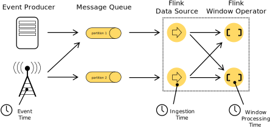
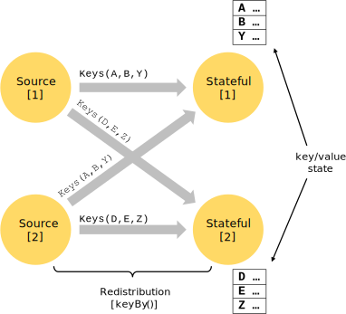

v1.5.1
v1.5.1
Dataflow Programming Model
- Levels of Abstraction
- Programs and Dataflows
- Parallel Dataflows
- Windows
- Time
- Stateful Operations
- Checkpoints for Fault Tolerance
- Batch on Streaming
- Next Steps
Levels of Abstraction
Flink offers different levels of abstraction to develop streaming/batch applications.

-
The lowest level abstraction simply offers stateful streaming. It is embedded into the DataStream API via the Process Function. It allows users freely process events from one or more streams, and use consistent fault tolerant state. In addition, users can register event time and processing time callbacks, allowing programs to realize sophisticated computations.
-
In practice, most applications would not need the above described low level abstraction, but would instead program against the Core APIs like the DataStream API (bounded/unbounded streams) and the DataSet API (bounded data sets). These fluent APIs offer the common building blocks for data processing, like various forms of user-specified transformations, joins, aggregations, windows, state, etc. Data types processed in these APIs are represented as classes in the respective programming languages.
The low level Process Function integrates with the DataStream API, making it possible to go the lower level abstraction for certain operations only. The DataSet API offers additional primitives on bounded data sets, like loops/iterations.
-
The Table API is a declarative DSL centered around tables, which may be dynamically changing tables (when representing streams). The Table API follows the (extended) relational model: Tables have a schema attached (similar to tables in relational databases) and the API offers comparable operations, such as select, project, join, group-by, aggregate, etc. Table API programs declaratively define what logical operation should be done rather than specifying exactly how the code for the operation looks. Though the Table API is extensible by various types of user-defined functions, it is less expressive than the Core APIs, but more concise to use (less code to write). In addition, Table API programs also go through an optimizer that applies optimization rules before execution.
One can seamlessly convert between tables and DataStream, allowing programs to mix Table API and with the DataStream API.
-
The highest level abstraction offered by Flink is SQL. This abstraction is similar to the Table API both in semantics and expressiveness, but represents programs as SQL query expressions. The SQL abstraction closely interacts with the Table API, and SQL queries can be executed over tables defined in the Table API.
Programs and Dataflows
The basic building blocks of Flink programs are streams and transformations. (Note that the DataSets used in Flink’s DataSet API are also streams internally – more about that later.) Conceptually a stream is a (potentially never-ending) flow of data records, and a transformation is an operation that takes one or more streams as input, and produces one or more output streams as a result.
When executed, Flink programs are mapped to streaming dataflows, consisting of streams and transformation operators. Each dataflow starts with one or more sources and ends in one or more sinks. The dataflows resemble arbitrary directed acyclic graphs (DAGs). Although special forms of cycles are permitted via iteration constructs, for the most part we will gloss over this for simplicity.

Often there is a one-to-one correspondence between the transformations in the programs and the operators in the dataflow. Sometimes, however, one transformation may consist of multiple transformation operators.
Sources and sinks are documented in the streaming connectors and batch connectors docs. Transformations are documented in DataStream operators and DataSet transformations.
Parallel Dataflows
Programs in Flink are inherently parallel and distributed. During execution, a stream has one or more stream partitions, and each operator has one or more operator subtasks. The operator subtasks are independent of one another, and execute in different threads and possibly on different machines or containers.
The number of operator subtasks is the parallelism of that particular operator. The parallelism of a stream is always that of its producing operator. Different operators of the same program may have different levels of parallelism.

Streams can transport data between two operators in a one-to-one (or forwarding) pattern, or in a redistributing pattern:
-
One-to-one streams (for example between the Source and the map() operators in the figure above) preserve the partitioning and ordering of the elements. That means that subtask[1] of the map() operator will see the same elements in the same order as they were produced by subtask[1] of the Source operator.
-
Redistributing streams (as between map() and keyBy/window above, as well as between keyBy/window and Sink) change the partitioning of streams. Each operator subtask sends data to different target subtasks, depending on the selected transformation. Examples are keyBy() (which re-partitions by hashing the key), broadcast(), or rebalance() (which re-partitions randomly). In a redistributing exchange the ordering among the elements is only preserved within each pair of sending and receiving subtasks (for example, subtask[1] of map() and subtask[2] of keyBy/window). So in this example, the ordering within each key is preserved, but the parallelism does introduce non-determinism regarding the order in which the aggregated results for different keys arrive at the sink.
Details about configuring and controlling parallelism can be found in the docs on parallel execution.
Windows
Aggregating events (e.g., counts, sums) works differently on streams than in batch processing. For example, it is impossible to count all elements in a stream, because streams are in general infinite (unbounded). Instead, aggregates on streams (counts, sums, etc), are scoped by windows, such as “count over the last 5 minutes”, or “sum of the last 100 elements”.
Windows can be time driven (example: every 30 seconds) or data driven (example: every 100 elements). One typically distinguishes different types of windows, such as tumbling windows (no overlap), sliding windows (with overlap), and session windows (punctuated by a gap of inactivity).

More window examples can be found in this blog post. More details are in the window docs.
Time
When referring to time in a streaming program (for example to define windows), one can refer to different notions of time:
-
Event Time is the time when an event was created. It is usually described by a timestamp in the events, for example attached by the producing sensor, or the producing service. Flink accesses event timestamps via timestamp assigners.
-
Ingestion time is the time when an event enters the Flink dataflow at the source operator.
-
Processing Time is the local time at each operator that performs a time-based operation.

More details on how to handle time are in the event time docs.
Stateful Operations
While many operations in a dataflow simply look at one individual event at a time (for example an event parser), some operations remember information across multiple events (for example window operators). These operations are called stateful.
The state of stateful operations is maintained in what can be thought of as an embedded key/value store. The state is partitioned and distributed strictly together with the streams that are read by the stateful operators. Hence, access to the key/value state is only possible on keyed streams, after a keyBy() function, and is restricted to the values associated with the current event’s key. Aligning the keys of streams and state makes sure that all state updates are local operations, guaranteeing consistency without transaction overhead. This alignment also allows Flink to redistribute the state and adjust the stream partitioning transparently.

For more information, see the documentation on state.
Checkpoints for Fault Tolerance
Flink implements fault tolerance using a combination of stream replay and checkpointing. A checkpoint is related to a specific point in each of the input streams along with the corresponding state for each of the operators. A streaming dataflow can be resumed from a checkpoint while maintaining consistency (exactly-once processing semantics) by restoring the state of the operators and replaying the events from the point of the checkpoint.
The checkpoint interval is a means of trading off the overhead of fault tolerance during execution with the recovery time (the number of events that need to be replayed).
The description of the fault tolerance internals provides more information about how Flink manages checkpoints and related topics. Details about enabling and configuring checkpointing are in the checkpointing API docs.
Batch on Streaming
Flink executes batch programs as a special case of streaming programs, where the streams are bounded (finite number of elements). A DataSet is treated internally as a stream of data. The concepts above thus apply to batch programs in the same way as well as they apply to streaming programs, with minor exceptions:
-
Fault tolerance for batch programs does not use checkpointing. Recovery happens by fully replaying the streams. That is possible, because inputs are bounded. This pushes the cost more towards the recovery, but makes the regular processing cheaper, because it avoids checkpoints.
-
Stateful operations in the DataSet API use simplified in-memory/out-of-core data structures, rather than key/value indexes.
-
The DataSet API introduces special synchronized (superstep-based) iterations, which are only possible on bounded streams. For details, check out the iteration docs.
Next Steps
Continue with the basic concepts in Flink’s Distributed Runtime.